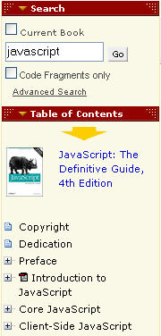

This is just a placeholder post for a half hour (?) hack I don't have time to do just at the moment... Update:Safari/Amazon library lookup bookmarklets now added...
As O'Reilly are coming to the OU tomorrow (I think) [internal readers: email c.bailey for info] to talk about their Safari Bookshelf electronic book service - which even has its own labs! - and their SafariU build-you-own-textbook service I wondered about how they reference their ebooks in a URL, and whether it was URL based.
Well, it is... though to see the book text you need a subscription (which we have via the library of course...): for example, this book (the 'free' page is here).
Now, you can also get hold of book ISBNs in an Amazon wishlist feed (I have one of these feeds driving a Firefox live bookmark) which has given me the idea of a live booklist...
Take one Amazon wishlist feed, to which I post O'Reilly books that interest me (perhaps I could scrape the publisher info from the ISBN and use a mixed publisher wishlist?), add a dash of libezproxy (see here) and republish as an feed. Consume as a live bookmark.
The user model is then this: I see a Safari book I like on Amazon, I add it to my Amazon O'Reilly wishlist, and then can pick up the full text of the book via a link fed to a live bookmark in my browser...
PS I hadn't noticed this at first:
Safari is an e-reference library where you can search across thousands of books from O'Reilly, Addison-Wesley, Cisco Press, Microsoft Press and more. Read books cover to cover or flip directly to the section you need in seconds.
You can also search within books, and even with code fragments contained in the books:

As it's lunchtime, here's a 5 minute hack/reversion of Udell's library lookup bookmarklet scheme - a 'public' Safari Library lookup bookmarklet, and a libezproxified one: Safari (OU) Library lookup bookmarklet.
I'll try and remember to add this to my Improved OU Library Lookup Greasemonkey Script.
Posted by ajh59 at May 23, 2006 11:20 AM